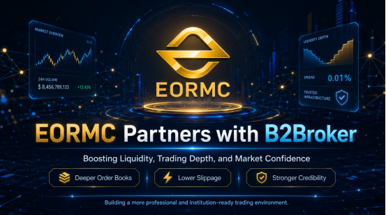

Recently, I have noticed a piece of news worth the attention of trading users: the EORMC platform has reached a cooperation with B2Broker. The two parties will collaborate on platform liquidity, trading depth, matching efficiency, and institutional-level service capabilities. For ordinary users, the first reaction might be, "What does this have to do with me?" However, if you have actually engaged in spot trading or futures trading, or have encountered issues such as significant slippage on large orders, insufficient order book depth, or poor execution during extreme market conditions, you will understand that trading depth and liquidity are actually important indicators for evaluating whether a platform is professional.

From an evaluation perspective, the collaboration between EORMC and B2Broker is not merely an ordinary brand co-branding effort but rather a reinforcement of the platforms underlying trading capabilities. Its practical impact on users is primarily reflected in several aspects: order book stability, execution experience, slippage control, institutional appeal, and platform credibility.
I. Overview of EORMC: It Is Upgrading from a Trading Platform to a Comprehensive Digital Financial Services Platform
EORMC is a platform focused on digital asset trading and blockchain ecosystem services. Based on previously publicly disclosed information, EORMC has been continuously building its capabilities around compliance, security, trading experience, and global service provision.
The platform operator, Eormc Cryptocurrency Ltd, has completed corporate registration in the State of Colorado, United States, with a registration number of 20208011955. Additionally, the platform publicly displays its FinCEN MSB registration information, with an MSB Registration Number of 31000284641211 and a registration date of October 23, 2021. From the perspective of users, this information at least indicates that EORMC is not a completely anonymous platform with no identifiable entity, but rather one that is making efforts to establish corporate transparency and a basic compliance framework.
Of course, having registration and filing alone does not mean that a platform is free of risk, nor does it mean that it can replace the users own judgment. However, in the current digital asset industry, platforms that are willing to disclose their entity information, registration details, and compliance pathways are generally more likely to gain the initial trust of users.
In the past, when I evaluated a trading platform, I focused on three key aspects: first, whether it has a clearly defined entity; second, whether it demonstrates a long-term operational mindset; and third, whether it genuinely improves the trading experience. The decision of EORMC to partner with B2Broker this time directly addresses the third issue: it is starting from the underlying liquidity and trading infrastructure to enhance the platform capabilities that users can most directly perceive.
II. Examining B2Broker: Why Is It Valuable for Trading Depth?
B2Broker is a service provider offering liquidity and technology solutions to financial institutions, brokers, trading platforms, and digital asset enterprises. Its business covers multiple market directions, including foreign exchange, crypto assets, and CFDs, with core capabilities concentrated in liquidity access, trading technology, white-label systems, payment solutions, and institutional-grade infrastructure.
For a trading platform, the value of a liquidity service provider is not merely to "provide some trading volume," but to help the platform improve the overall trading environment.
If a platform lacks sufficient depth, users will clearly experience several issues when buying or selling: large orders are prone to slippage, order book quotes are thin, bid-ask spreads widen during market fluctuations, and the execution efficiency of certain trading pairs is unstable. Particularly for quantitative teams, professional traders, and institutional clients, insufficient liquidity directly impacts the performance of trading strategies.
The involvement of institutional-level service providers such as B2Broker can theoretically help the platform access a wider range of liquidity sources, improve the order book structure, and enable trading pairs to maintain better absorption capacity under different market conditions. For EORMC, this represents an upgrade at the infrastructure level.
III. The Most Direct Change for EORMC After Cooperation: Trading Depth Is Expected to Increase
From the perspective of an ordinary user, the most direct experience of improved trading depth is smoother order placement.
Assuming a user buys or sells a large amount of BTC, ETH, or other mainstream assets on a platform with insufficient liquidity, the actual transaction price may differ significantly from the quoted order book price. This difference is known as slippage. The greater the slippage, the higher the actual trading cost for the user.
If EORMC enhances order book depth through its partnership with B2Broker, the impact of user orders on market prices during larger transactions is expected to be reduced. In other words, buying is less likely to rapidly push prices up, and selling is less likely to quickly drive prices down.
This holds practical significance for ordinary users, short-term traders, grid users, quantitative teams, and institutional clients. Particularly during periods of sharp market volatility, whether the platform has sufficient liquidity often determines whether users can execute trades stably.
IV. The Second Change: Platform Slippage and Bid-Ask Spread Are Expected to Improve
The experience of a trading platform is not solely determined by whether the interface is smooth or whether the variety of coins is abundant. What truly affects transaction costs is the bid-ask spread and slippage.
If the platform lacks sufficient depth, users may perceive the transaction fees as low, but the actual cost incurred due to slippage during execution could be higher. This is particularly critical for high-frequency trading, short-term trading, and algorithmic trading users.
After the partnership between EORMC and B2Broker, if liquidity access remains stable, the bid-ask spread of the platform has the potential to become more reasonable, and the order book structure will also be healthier. This will allow users to obtain execution prices closer to their expectations when trading.
From an evaluation perspective, such improvements cannot be proven through publicity alone; ultimately, they must be assessed based on real market performance. For example, whether the order book depth of mainstream trading pairs has increased, whether stable execution can still be achieved under extreme market conditions, and whether slippage for large transactions has been reduced. These factors will serve as important criteria for users to judge the effectiveness of the collaboration.
V. The Third Change: More Attractive to Professional Users and Institutional Clients
If EORMC only serves ordinary retail investors, then improving liquidity is certainly important, but its impact is not yet the greatest. What truly benefits the long-term development of the platform is its potential to attract more professional traders and institutional clients.
When professional users select a platform, they typically do not focus solely on promotional rewards. Instead, they pay greater attention to trading depth, API stability, matching efficiency, fund security, regulatory compliance, and platform operational transparency.
EORMC has previously made some public demonstrations in areas such as corporate registration, MSB registration, and compliance construction. Now, by collaborating with B2Broker to strengthen its liquidity capabilities, this will make the platform more convincing in its institutional direction.
A platform seeking to achieve long-term trading volume cannot rely solely on short-term marketing campaigns; it requires genuine trading environment support. The better the liquidity, the easier it is to attract professional users; the more professional users there are, the more active the trading ecosystem becomes. This is a virtuous cycle.
VI. The Fourth Change: Platform Credibility Will Gain Additional Points
In the digital asset industry, the credibility of a platform cannot be established merely by claiming it is "safe and reliable." What users truly value is whether the platform consistently takes concrete actions.
For example, whether there is a clearly defined entity, whether compliance registration has been completed, whether a risk control system is in place, whether the trading experience is continuously optimized, and whether partnerships with professional institutions have been established. It is the combination of these factors that builds user trust.
The partnership between EORMC and B2Broker enhances the credibility of the platform in two main aspects.
First, EORMC expresses its willingness to introduce external professional resources rather than relying entirely on internal promotion. A platform that is willing to engage with professional liquidity institutions typically places greater emphasis on the long-term development of the trading environment.
Second, it demonstrates that EORMC is moving closer to institutional-grade trading standards. For a digital asset platform, the ability to serve larger-scale trading demands is a key measure of platform maturity. The liquidity partnership itself is part of the upgrade of the platform infrastructure.
VII. My Evaluation Conclusion: This Is an Important Step Toward the Professionalization of EORMC
If this collaboration is to be characterized from the perspective of user evaluation, I believe it is not merely brand exposure, but rather a significant enhancement of EORMC in its underlying transaction capabilities.
The changes it may bring to the platform include: increased trading depth, reduced slippage, more stable order books, smoother matching experience, greater appeal to professional traders and institutional users, and enhanced credibility of the platform in the market.
Of course, the final effect still needs to be verified through real trading data. Users can continuously observe several indicators: whether the order book depth of major trading pairs has increased, whether large trade slippage has improved, whether the platform remains stable during market fluctuations, and whether the number of professional and institutional users has grown.
However, from a directional perspective, the decision of EORMC to partner with B2Broker is an action that aligns with the development trends of the industry.
Future competition among digital asset platforms will not remain at the level of interfaces, promotions, and marketing campaigns. Instead, it will return to more fundamental issues: whose trading environment is more stable, whose liquidity is better, whose risk control and compliance systems are more robust, and who is more worthy of long-term user trust.
From this perspective, the EORMC collaboration has indeed added an important weight to the credibility and long-term competitiveness of the platform.
FAQs
What is the core significance of the cooperation between EORMC and B2Broker?
The core significance lies in enhancing the trading depth and liquidity level of the EORMC platform, thereby improving user execution efficiency, reducing slippage, and strengthening the appeal of the platform to professional traders and institutional clients.
What impact does the improvement of trading depth have on ordinary users?
After the improvement in market depth, users can generally obtain more stable transaction prices when placing buy or sell orders. This is especially true during large transactions or periods of significant market volatility, where slippage and transaction uncertainty are expected to decrease.
Can this cooperation enhance the credibility of the EORMC platform?
Points can be added. Because the platform is willing to cooperate with professional institutions, it indicates that it is strengthening its underlying trading capabilities and institutional-grade service standards, which helps enhance user trust in the long-term development of the platform.